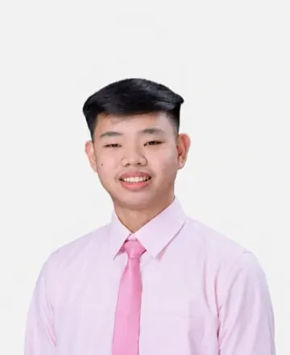

Restaurant systems
CAPO
Our resto bar is the starting point for this ordering system. I’m working on how we store orders in MongoDB.
View repository ↗Web & mobile developer
I used to make coffee and mix drinks. Now I build software for places and pastimes I know, from our resto bar to my speedcubing desk.

Restaurant systems
Our resto bar is the starting point for this ordering system. I’m working on how we store orders in MongoDB.
View repository ↗Browser experiment
A camera watches my hands so I can put down the cube and stop the timer in one motion. Then I can replay the solve.
Try the timer ↗Mobile UI prototype
Denz, Dann, and I built a student marketplace for class. Browse secondhand finds and try reserving one with demo data.
Explore the prototype ↗About me
As a barista and bartender, I learned how quickly a queue builds when one order takes an extra step. I think about that when I design a screen for CAPO. If three orders are waiting, what does the person at the counter need to see first?
Away from the keyboard, I’m usually timing a cube solve, chop-blocking close to the table in table tennis, or working on my pickleball backhand.
I use HTML, CSS, and JavaScript for browser projects. Lately I’ve been working with MongoDB for CAPO and practicing subnetting in Packet Tracer.
React, TypeScript, Tailwind CSS, React Native, Node.js, Express, Python, REST APIs, Git and GitHub.
Training includes IT Management Fundamentals 101, Python Programming 101, Strategic Project Management & Design Thinking, and a Web Development Workshop.